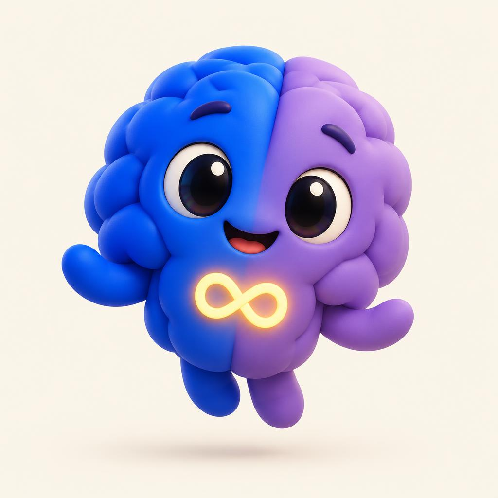

Entendiendo el sobreestímulo sensorial
Claves prácticas para identificar cuando tu sistema nervioso necesita una pausa profunda.

"Te ayudo a entender que quizá no eras difícil, solo estabas intentando encajar en una frecuencia que no era la tuya."

¡Hola! Qué alegría saludarte. Soy Sparkie, tu guía y compañero aquí en Neurofrecuencia.
Si te fijas bien en mí, notarás que tengo un lado de color azul eléctrico vibrante y otro lado de un suave lila. ¿Sabes por qué? Porque ningún cerebro funciona de un solo color, y aquí venimos a celebrar toda esa hermosa diversidad que te hace ser quien eres.
Estoy hecho con una textura suave, de esas que invitan a la calma, y en el centro llevo latiendo un símbolo de infinito dorado que brilla despacito. ¿Mi misión? Acompañarte paso a paso, a tu propio ritmo y sin ninguna prisa.
Estaré merodeando por el blog, guiándote en los ejercicios y en cada rincón del sitio donde sientas que necesitas una pausa amigable, un respiro o simplemente una compañía que te entienda y no te juzgue.
Y te cuento un secreto... Muy pronto, esta pequeña chispa formará parte de un cuento muy especial, donde te llevaré de la mano a descubrir que nuestras diferencias son, en realidad, nuestros superpoderes más auténticos.
¡Ponte cómodo, respira hondo y bienvenido a tu espacio!

Trayectoria profesional combinada con el enfoque de unmasking (desenmascaramiento), ofreciendo un espacio clínico cálido, humano y libre de etiquetas rígidas.
“Mi objetivo no es corregir tu forma de pensar, sino darte las herramientas para comprender tu propio mapa neurológico.”
Acompañamiento personalizado online o presencial enfocado en tus necesidades específicas.
Espacios de psicoeducación, comunidad y validación compartida entre iguales.
Diagnóstico comprensivo y mapas de procesamiento cognitivo adaptados a ti.
Uso de cámara opcional si experimentas fatiga sensorial.
Espacio libre para hacer pausas, moverte o autorregularte.
Cero necesidad de enmascarar ni aparentar normalidad.
Sparkie y yo estamos terminando de armar este recurso con mucho cariño — un acompañamiento para tu proceso de autoconocimiento neurodivergente, desde la amabilidad y respetando plenamente tus tiempos. Vuelve pronto por aquí. 🌟
En construcciónClaves prácticas para identificar cuando tu sistema nervioso necesita una pausa profunda.
Cómo transformar las etiquetas limitantes en comprensión de tu verdadera naturaleza.
Pequeños anclajes cotidianos que devuelven la calma a tu mente y cuerpo.
No. Trabajo con personas diagnosticadas, en proceso de evaluación o que simplemente se identifican con la experiencia neurodivergente y quieren entenderse mejor. No hace falta una etiqueta para empezar.
Ambas modalidades están disponibles. La sesión online mantiene el uso de cámara como algo opcional, para respetar la fatiga sensorial de cada quien.
Las sesiones individuales duran 50 minutos. La frecuencia se define contigo en la primera cita, según tus objetivos y tu ritmo — no hay un molde único.
Este es un espacio de acompañamiento neuroafirmativo y psicoeducación, centrado en comprender tu funcionamiento y darte herramientas prácticas. No sustituye tratamiento médico o psiquiátrico cuando este es necesario.
Directamente desde el calendario de la sección de Reservas, o escribiendo por WhatsApp. Te pedimos avisar con al menos 24 horas de anticipación si necesitas reagendar.
Selecciona el horario que mejor se adapte a tu energía actual mediante nuestro sistema directo.
Aquí se integrará el calendario de Acuity Scheduling para agendar citas sin fricción.
Abrir Calendario de CitasSin prisa, sin necesidad de explicarlo todo de una vez. Cuéntame lo que necesites cuando te sientas lista o listo.